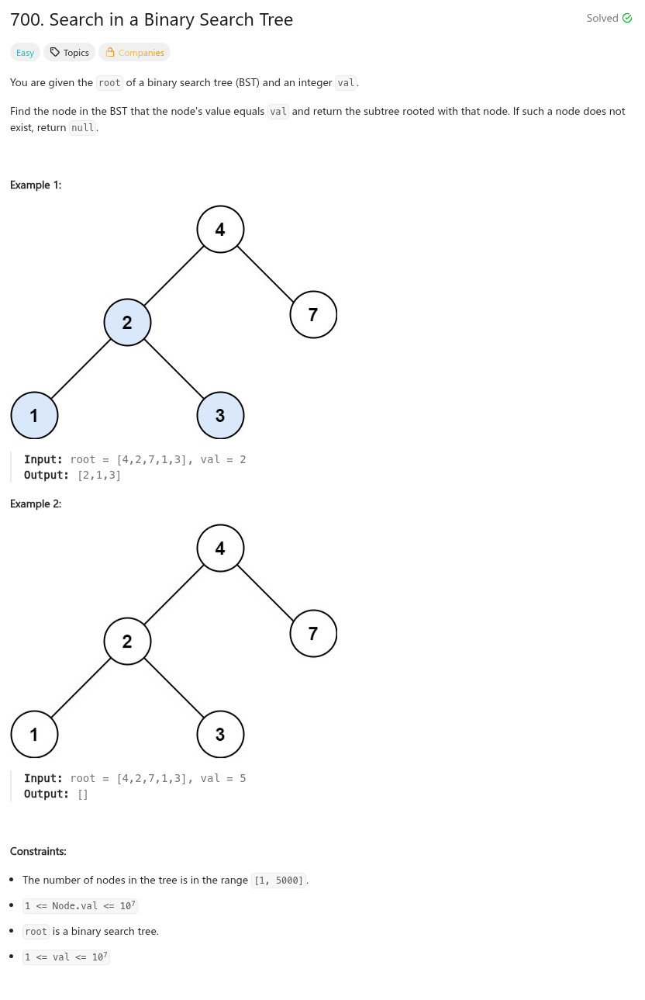

參考資訊：
https://www.cnblogs.com/Dylan-Java-NYC/p/16419214.html
題目：

/**
* Definition for a binary tree node.
* struct TreeNode {
* int val;
* TreeNode *left;
* TreeNode *right;
* TreeNode() : val(0), left(nullptr), right(nullptr) {}
* TreeNode(int x) : val(x), left(nullptr), right(nullptr) {}
* TreeNode(int x, TreeNode *left, TreeNode *right) : val(x), left(left), right(right) {}
* };
*/
class Solution {
public:
TreeNode* searchBST(TreeNode* root, int val) {
while (root) {
if (root->val > val) {
root = root->left;
}
else if (root->val < val) {
root = root->right;
}
else {
return root;
}
}
return NULL;
}
};